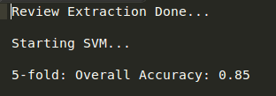

Problem Statement:
Our problem is to predict community determined humor in Yelp reviews. Yelp reviews can be voted as funny and, given a review, it is our task to label it as funny or not, using machine learning techniques.
Applications
Yelp is a service whose utility relies on being able to provide an accurate, crowd sourced opinion of a place of business. So it’s important to determine which reviews provide valuable insight into a business. Humor could play an important role in this determination and help consumers to get to informative reviews and not waste time on reviews which have nothing to provide. So, our project would help in correctly identifying humor.
Challenges
We cannot have an idea whether or not our models can be extended out of domain. This is because there is no labeled corpus of funny texts – partially due to the subjectivity associated with imposing a binary outcome on something such as humor. Some work has been done applying similar methods to Twitter, but no large, labelled datasets exist for thorough validation.
Preprocessing
- Tokenize the reviews, without removing stop words or punctuations, as they are quite
expressive in the context of Yelp.
- Build word vectors using gensim package.
SVM on Bag of Words
Made feature vectors using Tf-Idf Vectorization and fed this to SVM classifier with linear kernel and got 85.0% accuracy. The SVM train function from scikit library of python was used for this.

Deep Feedforward Neural Network
Created word vectors of length 100 on the reviews using gensim Word2Vec and fed the 1D feature vector as input to the neural network with a hidden layer and 2 output units. After running for 30 epochs, with 20% test data, the accuracy was 89.87
Convolutional Neural Networks
The input was convoluted with filters of size 3,4,5,6 and width same as that of the input. We trained CNN for 20 epochs with a batch size of 100. Using 1-max pooling for each filter, we get a 1D vector. This vector is the input to the softmax layer which classifies the review as funny or not funny. The accuracy was
References
Oliveira and Rodrigo, Humor Detection in Yelp reviews https://cs224d.stanford.edu/reports/OliveiraLuke.pdf